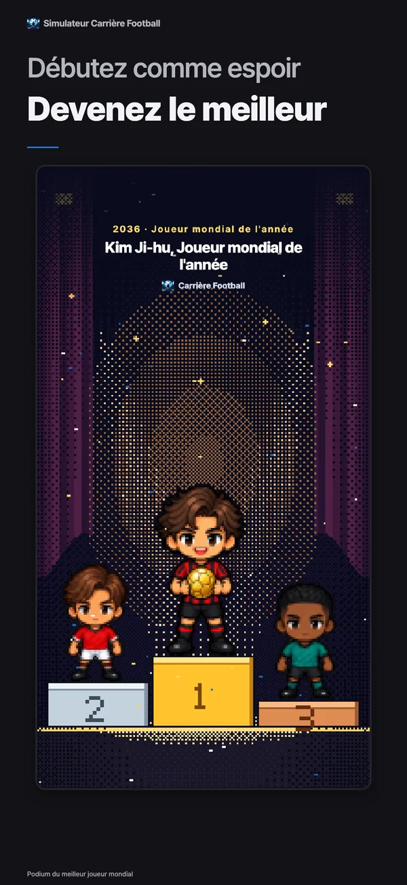
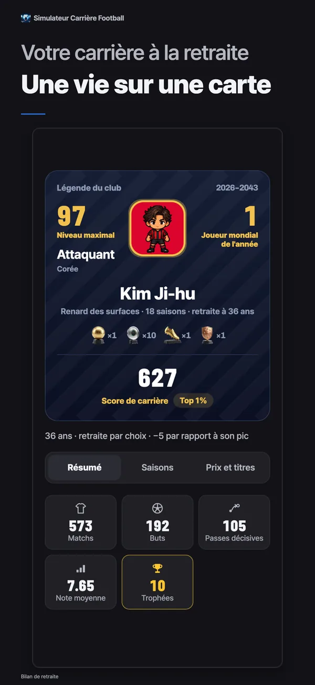
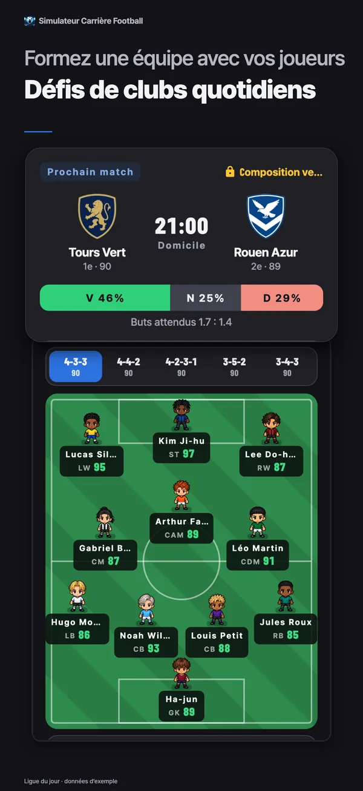
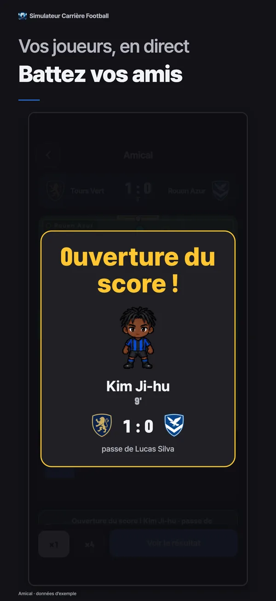
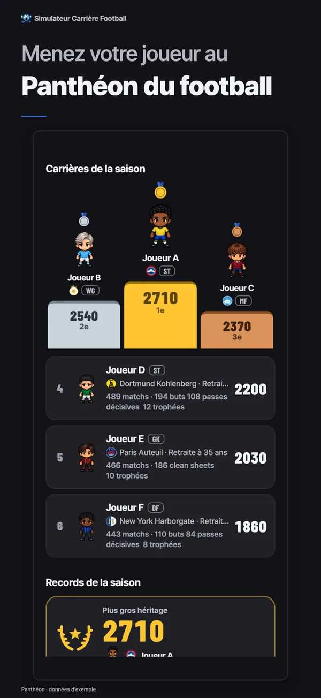
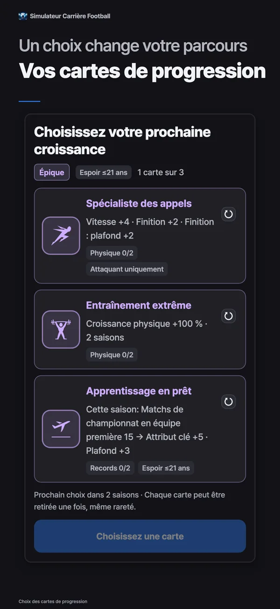

- YT Lab
- Simulateur Carrière Football

Simulateur Carrière Football De vos dix-sept ans à la retraite, toute une vie de joueur
Simulateur Carrière Football est un jeu mobile de simulation de carrière de footballeur créé par YT Lab. À dix-sept ans, vous sortez du centre de formation et tentez de gagner votre place depuis le banc de l'équipe première. Transferts, sélection nationale, choix du moment de la retraite : vous tracez votre parcours. Les cartes de croissance choisies toutes les deux saisons changent la donne, et vos joueurs retraités composent ensuite l'effectif de votre club en Ligue hebdo.
Choisissez votre prochaine croissance
Attaquant de 27 ans · OVR 96Chaque carte peut être retirée une fois. Sa rareté ne change pas.
Cette démo utilise les vraies cartes et les calculs de l'application. Elle recrée le moment où un attaquant vedette de 27 ans obtient une sélection Legend, la plus rare. Les nouveaux tirages et les cartes suivantes utilisent les mêmes possibilités et probabilités que le jeu. Chaque essai repart du même joueur.


Téléchargement gratuit, avec achats intégrés. Disponible sur iPhone et iPad sous iOS 15 ou version ultérieure, et sur Android 7.0 ou version ultérieure.
Envie d’essayer avant d’installer ? Jouez directement dans votre navigateur
Toutes les deux saisons, une carte sur trois
Vos attributs progressent automatiquement au fil des matchs. Les cartes de croissance ajoutent des choix à cette progression. Au départ, puis toutes les deux saisons, trois cartes de même rareté et de familles différentes vous sont proposées : vous en gardez une. Plus la rareté est élevée, plus l'effet est fort. La première carte est forcément Épique.
Les cartes à effet immédiat
L'effet s'applique dès le choix. La concentration paie donne +6 à un attribut principal et +3 à son plafond. Combler les lacunes ajoute 4 au plus faible attribut principal et au plus faible attribut secondaire.
Les cartes qui repoussent vos limites
Chaque attribut possède un plafond caché où la progression automatique s'arrête. Un peu de potentiel, Potentiel ouvert et Percée de potentiel repoussent cette limite. Les cartes peuvent porter les plafonds jusqu'à 95.
Les cartes qui récompensent vos performances
Chasseur de buts donne +1 en Finition tous les 5 buts ; Star du match, +2 à un attribut tous les 2 MOM ; Prêt à décoller, +8 à un attribut principal après 30 matchs. La récompense se gagne sur le terrain.
Les cartes qui demandent un sacrifice
Sprint explosif offre +8 en Vitesse contre −3 en Jeu aérien. Talent diabolique donne +12 au plafond et +10 à un attribut principal, contre −3 à un attribut secondaire. Chaque avantage a sa contrepartie.
Les cartes qui prolongent votre carrière
Second apogée réduit le vieillissement de moitié pendant trois saisons et prolonge votre carrière de 2 ans. Dernière flamme donne +6 à trois attributs principaux, mais vous prenez votre retraite à la fin de cette saison.
Retirer une carte est gratuit
Une carte ne vous convient pas ? Retirez-la individuellement. Sa rareté reste identique et sa nouvelle famille sera différente de celles des deux autres cartes.
Du banc au titre de Joueur mondial de l'année
Vous ne débutez pas titulaire dans l'élite. Vous passez par la formation et la réserve, puis vous gagnez votre place depuis le banc de l'équipe première. Plus loin vous attend le titre de Joueur mondial de l'année, décerné au meilleur de chaque saison. Vos cartes et vos performances décident jusqu'où vous irez.
- 17ans
Centre de formation
Vous commencez à dix-sept ans au centre de formation. Le pack de départ en formation permet de débuter dès quinze ans.
- 19ans au plus tard
Équipe réserve
Vous rejoignez la réserve lorsque vous approchez du niveau de l'équipe première ou atteignez dix-neuf ans. La promotion se décide à la fin de la saison.
- 16–21débuts selon la ligue
Du banc de l'équipe première à une place de titulaire
L'âge des débuts varie selon la ligue. L'accès à l'équipe première dépend de votre âge, de vos attributs et de votre note de saison. La confiance de l'entraîneur détermine votre temps de jeu.
- Étéaprès la saison
Transferts et prolongations
Demandez un transfert ou choisissez parmi les offres. Avec votre agent, négociez le salaire, la Promesse de titulaire, la Clause libératoire et les autres conditions.
- 18+en équipe première
Équipe nationale
Les joueurs de l'équipe première âgés d'au moins dix-huit ans peuvent être convoqués en sélection. Le tournoi mondial et les tournois continentaux se succèdent en alternance tous les deux ans.
- 36–41selon le poste
Ce qui reste après la retraite
Par défaut, un Ailier joue jusqu'à 36 ans et un Gardien jusqu'à 41 ans. Les cartes et les événements peuvent prolonger la carrière ; vous pouvez aussi décider de vous arrêter plus tôt.
Vos joueurs retraités deviennent votre club
Conservez vos joueurs retraités dans les Archives des carrières pour les retrouver dans l'effectif de votre club en Ligue hebdo. Choisissez votre formation et vos tactiques avec les joueurs que vous avez fait grandir, puis affrontez d'autres clubs chaque semaine. Vous n'avez pas encore de retraités ? Vous pouvez participer avec les joueurs de base.
Une semaine, une saison
Préparez votre effectif le lundi, puis disputez le championnat du mardi au vendredi. Le samedi est consacré à la phase de groupes de la coupe, le dimanche aux matchs à élimination directe.
Des divisions à gravir, une place à défendre
Vos résultats de la semaine décident de votre promotion ou de votre relégation. Partez des divisions inférieures et hissez-vous jusqu’à la Classe mondiale.
Amis
Ajoutez vos amis grâce à leur code, choisissez votre formation et vos tactiques, puis disputez un match amical. Une défaite ? Prenez votre revanche.
Défi du jour
Tout le monde reçoit le même joueur. Faites-le progresser pendant huit saisons et visez le meilleur score avant la clôture du classement.
Jouez mois après mois. Progressez sur le terrain.
Une saison dure dix mois, d'août à mai, et compte 38 matchs. Apparitions, buts, passes décisives, matchs sans encaisser, MOM et notes alimentent votre progression du mois. Les chiffres montrent précisément ce qui a augmenté. Avancez mois par mois ou laissez le temps défiler automatiquement.
Progression du moisDribble 57 → 58 +1
Un grand mois peut vous valoir le Joueur du mois, une place dans l'Équipe du mois ou, pour un Gardien, l'Arrêt du mois. Seules vos performances comptent, sans tirage caché. En fin de saison, visez Meilleur buteur, Équipe type de la saison, Joueur de l'année, voire Joueur mondial de l'année.
Images du jeu






Une autre façon de vivre le football
Un joueur, pas un entraîneur
En carrière de joueur, vous n'avez ni écran d'effectif, ni tableau tactique, ni budget de transferts. L'entraîneur décide de votre temps de jeu, et son remplaçant peut rechercher un autre profil. Pour gérer votre club, rendez-vous en Ligue hebdo.
Les probabilités sont affichées
Lors des situations rencontrées en saison, chaque choix affiche à l'avance les probabilités de ses trois issues, avec des barres et des pourcentages. Vous pouvez aussi voir comment vos attributs, la confiance de l'entraîneur, votre condition et vos cartes de croissance modifient ces chiffres.
À chaque ligue, sa carrière
De l'Angleterre, l'Espagne, l'Allemagne, l'Italie et la France à la Corée, au Japon et à l'Amérique du Sud. Chaque ligue a ses âges de début, salaires et quotas de joueurs étrangers. Tous les noms de ligues, clubs, joueurs et entraîneurs sont fictifs.
La carrière s'arrête. Les records restent.
Vos statistiques de carrière restent, accompagnées d'une évaluation sur six axes : qualité, production, volume, récompenses, titres et scène. Découvrez votre place en pourcentage parmi l'ensemble des carrières. Les carrières terminées rejoignent le classement des joueurs de la saison et le Panthéon.
Questions fréquentes
- Le jeu est-il gratuit ?
- Vous pouvez télécharger le jeu et aller jusqu'à la retraite gratuitement. Les cartes de croissance et les nouveaux tirages sont aussi gratuits. Les achats facultatifs comprennent le retrait des publicités, le pack de postes, le pack de départ en formation, le pack de soutien, l'or et les tickets de relance. Les tirages d'attributs initiaux ont les mêmes probabilités, qu'ils soient gratuits, obtenus par publicité ou avec un ticket.
- Peut-on jouer sans connexion ?
- Votre carrière progresse et se sauvegarde sur votre appareil : vous pouvez donc jouer hors ligne. Une connexion est nécessaire pour les classements, la Ligue hebdo, les matchs amicaux entre Amis, le Défi du jour, les achats, l'utilisation de l'or et le transfert vers un autre appareil.
- Peut-on jouer sur PC ou dans un navigateur ?
- Jouez jusqu'à la retraite dans l'application sur iPhone, iPad et Android. Sur ordinateur ou dans le navigateur de votre téléphone, la version d'essai web vous permet de découvrir gratuitement les cinq premières saisons du même jeu, sans installation.
- Quels postes peut-on choisir ?
- Gardien, Défenseur, Milieu, Ailier et Attaquant. Gardien et Attaquant sont gratuits ; le pack de postes débloque les trois autres. Chaque poste propose sept styles de jeu, soit 35 au total, tous gratuits.
- Combien de carrières peut-on mener à la fois ?
- Avec trois emplacements de carrière, faites progresser trois joueurs en parallèle. Votre nationalité détermine votre équipe nationale ; choisissez votre premier club parmi les propositions de votre pays et de l'étranger.
- Y a-t-il de vrais joueurs ou clubs ?
- Non. Toutes les ligues, tous les clubs, joueurs et entraîneurs sont fictifs.
- Mon nom est-il publié au classement ?
- Les carrières terminées entrent au classement, mais vous pouvez désactiver cette option à tout moment. Les noms que vous avez modifiés ne sont publiés qu'avec votre accord.